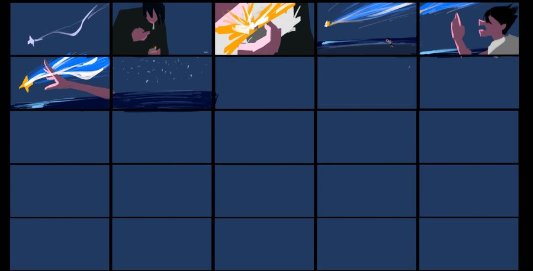
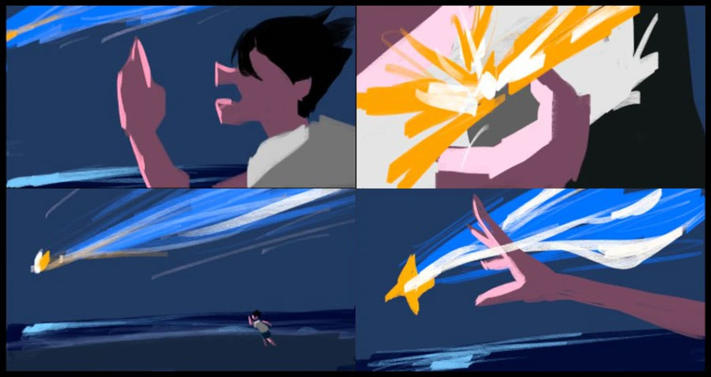
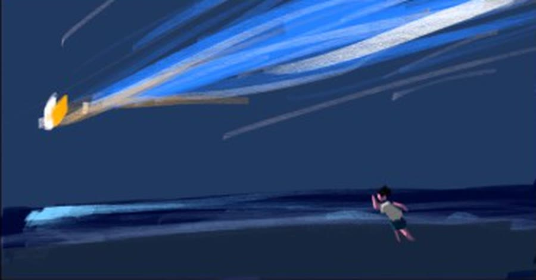

Chasing the Star
- What
- 26-second 2D short, 1920 × 1080, 24 fps
- My part
- Story, color script, animatic, character animation, direction
- Finished
- October 2026
A boy chases a falling star.
A 26-second 2D short made in October 2026. The story, the color script, the animatic and all the character animation are mine. Several shots were painted with AI tools from my drawings, and the list below says exactly which.
The film
Color script






Animatic
The boy's run
How the run is staged
The close-up reach
Who made what
Mine
- The story, the color script and the pencil animatic (Storyboard Pro)
- The boy's line turnaround
- All character animation in Harmony: the man, the hands, the boy's run and the close-up reach, from rough to line, flat color and lighting passes
- Direction and every call on the cut: the hold and hard cut, the camera idea for the beach run, the shared sea and the pull-back at the end, choosing the music take and placing it
- Direction for the final grade and the motion blur
- The live-action lighter reference video
AI, with the tool named
- Midjourney: style frames, the street-corner background, the sea panorama, the look of the star
- Nano Banana Pro and Nano Banana 2, through the Runway API: the boy's color tests and colored five-view, every drawing of shot 5 (redrawn one by one from my animatic), comet and star frames following my line art, concept paintings, background layers, the final seascape
- Suno: the music, “Comet”
- Claude: feedback, timing and spacing plans, palette files, lighting guides, compositing, the Maya build scripts, and the After Effects grade and motion blur, built by script
- Runway Aleph and Kling: early tests for shot 5 and the waves, not in the final film
Next project: KID